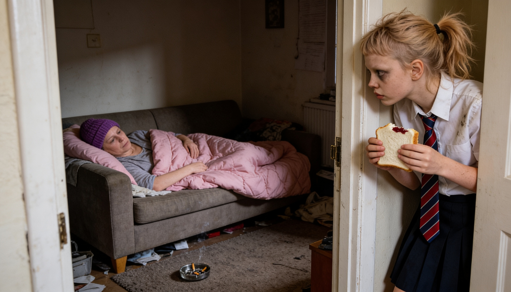
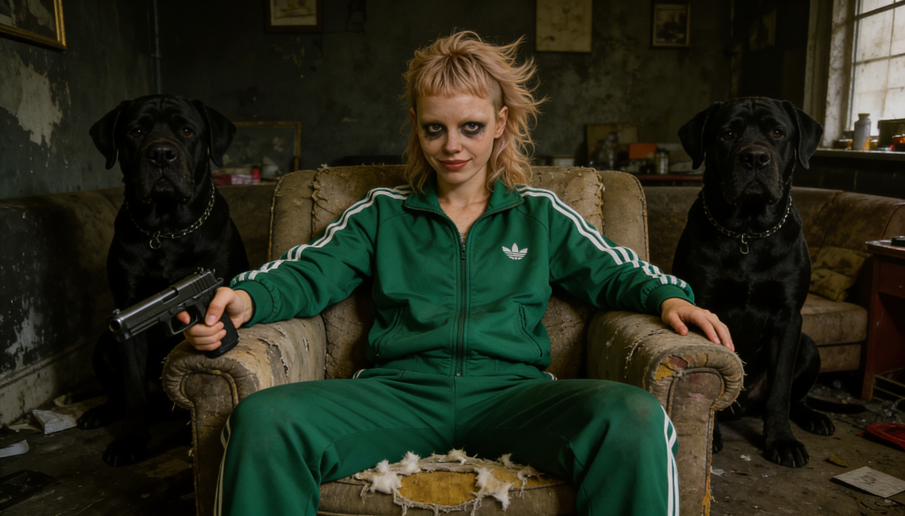
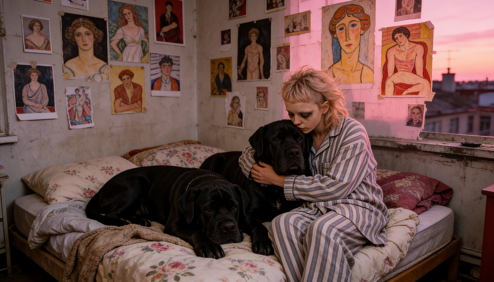

The Slab, London 2035
BiddyFlint
The Slab is home to a lot of mistakes.
Biddy Flint is one of them.
The Slab, London 2035
The Slab is home to a lot of mistakes.
Biddy Flint is one of them.
Orphaned at 13, Biddy Flint was left to raise herself in a shark tank. She learnt the hard way in tower block poverty that survival requires cunning and resourcefulness.
When trust is thin on the ground, family is everything. Her family come with powerful jaws and unswerving loyalty. Which is lucky, because Biddy Flint has the worst of humanity on her doorstep.
And someone has to take out the trash.
A tower block estate in 2035 London. Built to house people. Designed to contain them. The Slab has its own laws, its own hierarchy, its own memory — and it forgets nothing.
This is not a place you choose. It's a place that chooses you. And once it has you, it doesn't let go.
Location
East London, 2035
Structure
Brutalist Tower Block
Class System
Violence-Based
Escape Rate
Near Zero

In Her Own Words
This might not be an estate you'd want to move into if you had the choice. But if you're from here, you'll never leave. If you're from here, it's unlikely you'll ever get the chance.
Like any community, it's a microcosm: unspoken laws, a class system, a hierarchy based on violence, and a new generation of disrupters pushing until one of the old seams finally splits.
I'm an orphan. Well, on paper I am. For years my mum told me that my dad was Keith Flint. She was an extra in the video for Baby's Got A Temper — you can see her at 00:01:27 — and the story was she got invited back to Keith's dressing room between takes.
Mind you, Cassie was hardly the most credible narrator. Copious amounts of acid in the 80s and ecstasy in the 90s. An alcoholic in Y2K. Got cancer at 30 and was dead by 32. I was 13. My auntie moved in for two weeks and then fucked off to Portugal. I've looked after myself ever since.
This is not a cry for sympathy or a share for likes. Life is like a box of chocolates from a Russian spy. You never know which one is going to make you shit, cry and puke blood concurrently. I can only change the things I can change. And the things I can change usually have a common denominator — a man who thinks he can do whatever the hell he wants.
My name is Biddy Flint.
Who the fuck are you?
— Biddy Flint


Biddy Flint didn't get a childhood. She got a crash course. The Slab taught her that sentiment is a luxury, that loyalty is currency, and that the only people worth trusting have four legs and don't talk back.
She is funny in the way only people who have survived something truly awful can be funny — dark, immediate, with an edge that cuts before you notice it's moving. She is not reckless. She is precise. There is a difference.
Instinct
Raised by chaos, she reads a room faster than anyone. Survival sharpens what privilege blunts.
Her Dogs
Two massive black English Mastiffs. The only family she's got. They go everywhere she goes.
Fury
Not rage — fury. Controlled, directed, purposeful. She doesn't lose it. She deploys it.
Humour
Razor-sharp and completely her own. The kind of funny that makes you laugh then feel guilty about it.
Biddy Flint is a fully realised world. The Slab, its inhabitants, its hierarchy — all of it exists and all of it is available to be explored across any medium that can hold her energy.
A natural — episodic, estate-based, character-driven. Think Misfits meets Happy Valley.
A contained story from the world. Existing visual development and scene work already produced.
The voice is already there on the page. Raw, funny, unforgettable literary fiction.
Open world estate. 2035 London. The Slab's hierarchy as a living system to navigate.
Biddy's voice as a first-person narrative series. That monologue is just the beginning.
In development — a GPT trained on Biddy's voice. Because she should be able to answer back.
Biddy Flint is available for option, adaptation, and collaboration across all formats. If you can see what this is — get in touch.
Make Contact